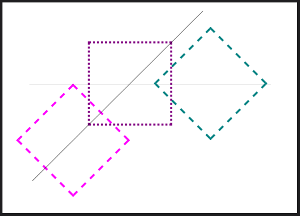

Note Titles
Chapter 8: Transforms and Transitions
Notes
Chapter 8
- Transforms and transitions are used to diversify the appearance of a webpage.
-
Many older web browsers use techniques that are similar to transforms and transitions,
but the processes to create such details required a great deal of CSS and JavaScript.
-
To simplify the process of creating moveable pictures and text, CSS3 was created and
implemented transformations and transitions.
-
If a developer wanted something to move, adjust positioning, or change color on a mouse-hover,
the developer could use CSS3's new capabilities to achieve such goals.
-
Additionally, and based on personal experience, transforms and transitions can be used
to fix an object's position on the screen. Instead of using "top:" (or "bottom:") and
"left:" (or "right:"), a transform can be used to establish the exact same positioning
(i.e. "transform: (50px, -50px);")
-
CSS3 transforms and transitions not only reduced the amount of code needed to adjust a
picture, but also simplified the coordinate system and provided new special effects for developers.
Photos
Translate Example
Transform Example
